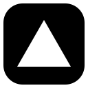

HTMLStructure
BSIT Student · Full-Stack Developer
Building thoughtful
web experiences
with purpose.
I'm Jedgs Vincent S. Calma — an IT student and web full-stack developer focused on creating responsive interfaces, reliable APIs, secure authentication, and user-friendly web applications.
Jedgs VincentCalma
Open to opportunities
HTMLCSSJavaScript
01 About me
More than just code
Student mindset.
Builder energy.
I'm a second-year Bachelor of Science in Information Technology student at National University.
I enjoy building clean, functional web experiences and continuously sharpening my skills through hands-on projects. For me, great development lives where thoughtful design, solid code, and real user needs meet.
2ndYear BSIT
NUNational University
100%Curious & driven
02 What I do
Tools & Stacks
My developer
toolbox.
I combine technical foundations with a sharp eye for detail to build web experiences that work beautifully on every screen.
CSSStyling
JavaScriptLanguage
PHPBack end
TypeScriptLanguage
React.jsFront end
Node.jsRuntime
LaravelFramework
JavaLanguage
C++Language
GitHubVersion control
CLanguage
MySQLDatabase

VercelDeployment
REST APIsIntegration
JWT AuthSecurity
Auto EmailAutomation
SMS AlertsNotifications
Full-Stack Development
Building responsive interfaces and dependable back-end systems with clean, maintainable code.
Responsive Design
Creating layouts that feel natural and look sharp from mobile to desktop.
Problem Solving
Breaking complex challenges into practical, efficient digital solutions.
03 Experience
The journey so far
Learning by
building.
Every project is a chance to learn, refine, and make something better than yesterday.
BS Information Technology
Building a strong foundation in programming, information systems, web technologies, and collaborative problem-solving.
Full-Stack Developer
Creating responsive web applications, APIs, secure authentication flows, and automated notification features through hands-on development work.
Ready for the next opportunity
Let's create
real impact.
I'm ready to contribute, learn from a professional team, and bring care and curiosity to every project.
Back to the top ↑